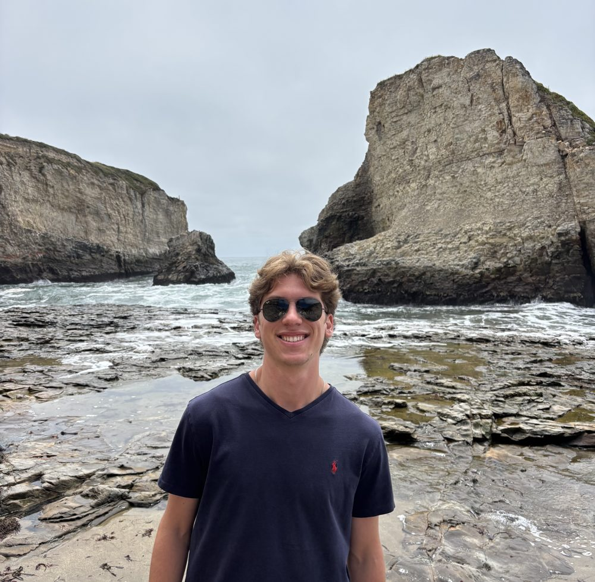

I'm a senior Aerospace and Ocean Engineering student at Virginia Tech whose passionate to learn, innovate, and make a positive impact on the world. I've always been keen on figuring out how things work and building my own projects. Growing up with little to no exposure to engineering as a kid, I had to figure a lot of things out on my own. I started my journey building balsa wood airplanes in my bedroom and now I get to work on some pretty cool stuff.
Currently, I'm working for Northrop Grumman as a propulsion systems engineer. I work directly with heavy-duty turbomachinery systems and get to get my hands dirty in our on-site rapid prototyping facility where I've built some pretty cool things. Before this summer, I worked as a fluid systems engineer at HII (Newport News Shipbuilding) where I was first introduced to CFD and got a lot of meaningful fluid component structural engineering experience. During the school year I get to do CFD research on hypersonic reentry vehicles, where I'll likely be fully published later this fall.
I perform my best when working under a lot of pressure and enjoy juggling several projects and tasks at a time. I'm a social guy - a very social guy and love working with a close-knit team. Outside of work and school I enjoy playing my electric guitar (sonic blue 50's style tele, an absolute beauty), riding roller coasters, exploring the outdoors, staying fit, cooking something new, and hosting my friends. Check out some of my work below and lets build something new together.

H. TRACY